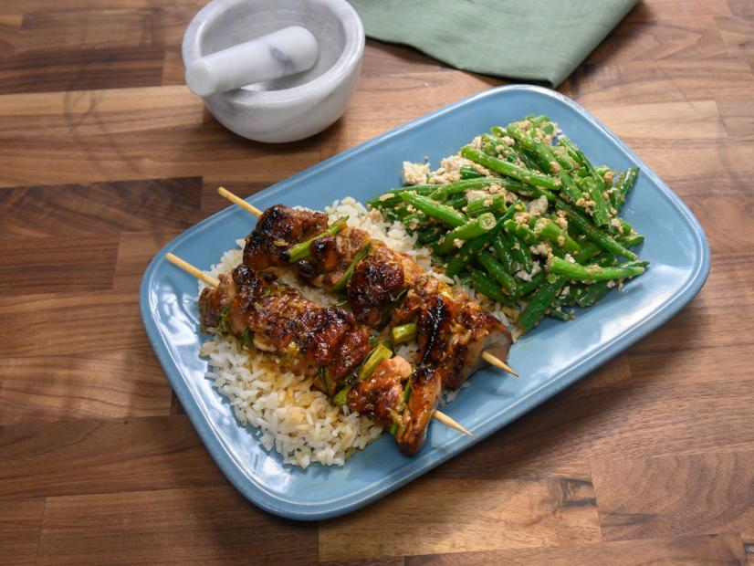

Chicken Yakitori Recipe

Description
Serve with white rice and sake for an easy but special meal! Total cook time will be 40 minutes.
Additional things to keep in mind*
- Prep Time: 10 min
- Cook Tme: 15 min
- Additional Time: 15 min
- Servings: 4
Ingredients:
- 10 wooden skewers
- 4 skinless, boneless chicken thighs, cut into 1-inch cubes
- 4 scallions, sliced into 1-inch pieces
- 1.5 cup of sake
- 1.5 cup of soy sauce
- 3 tbsp of mirin
- 2 tbsp of white sugar
- 1 tbsp of vegetail oil (or to taste)
Steps
- Soak 10 wooden skewers in cold water for 15 minutes.
- Alternating with scallions, thread chicken pieces onto the soaked skewers.
- Combine sake, soy sauce, mirin, and sugar in a small saucepan and bring to a boil.
Reduce heat and simmer for 5 minutes. Reserve 1/2 of the sauce for dipping.
- Heat a grill pan over high heat and lightly brush with vegetable oil.
Add skewers and cook until chicken is no longer pink in the center,
basting frequently with 1/2 of the sauce, 7 to 10 minutes per side.
Back